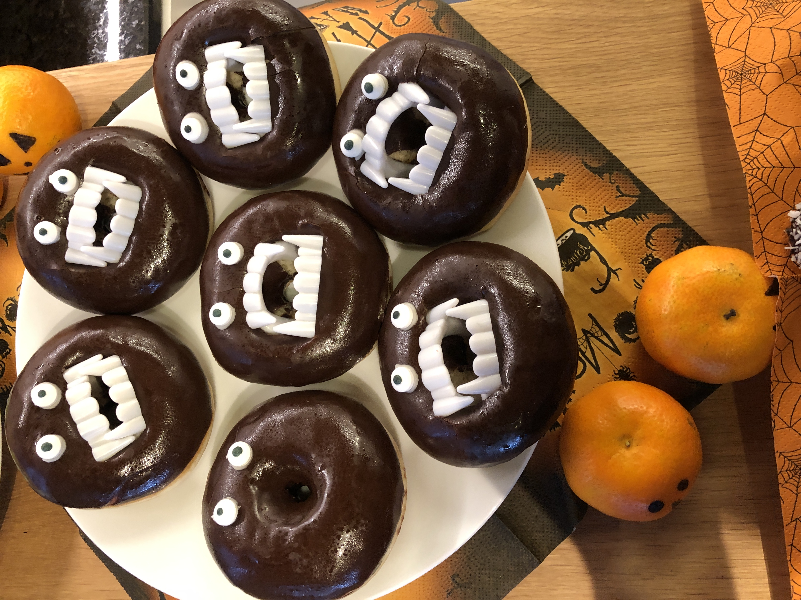
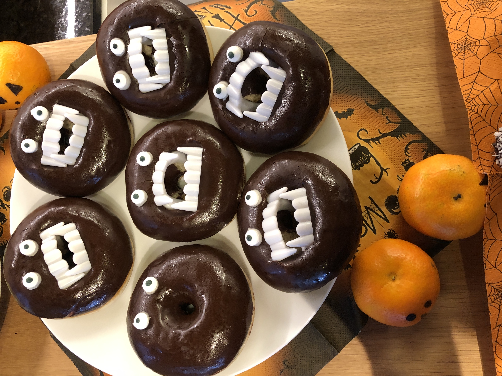
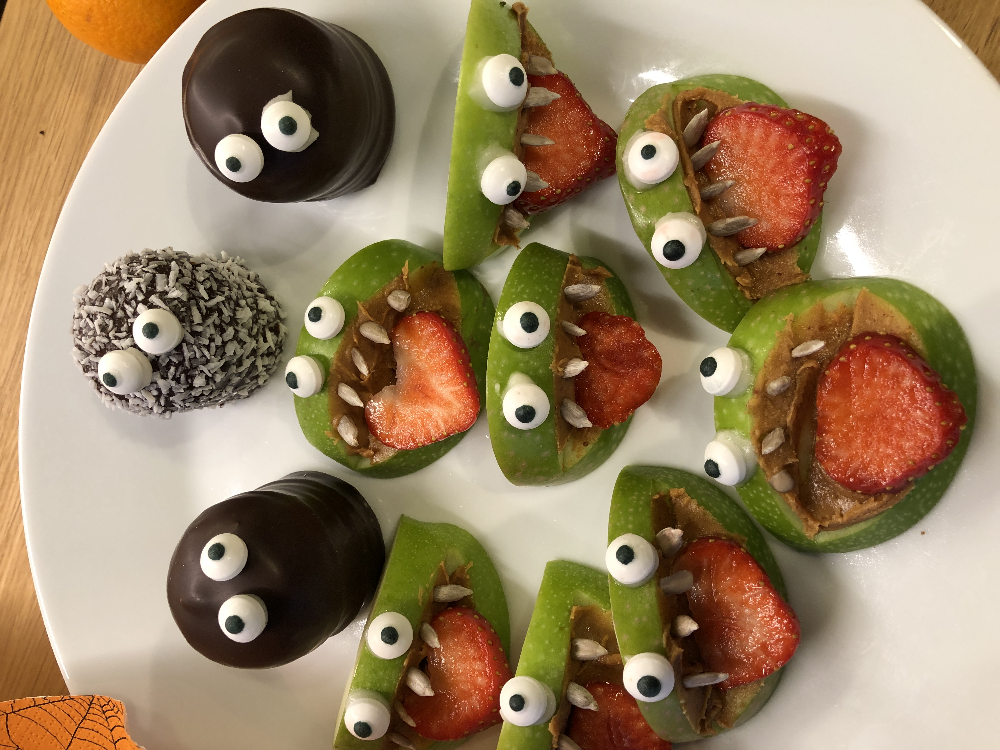
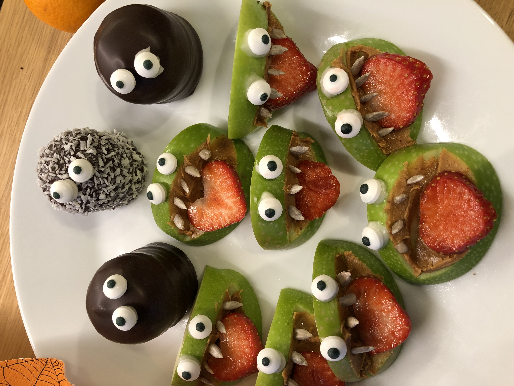

Hobbys
Mit vier Kindern, Haushalt, Arbeit und dem Kurs beim Coding Campus bleibt eigentlich nicht sehr viel Zeit für Hobbies.
Ich lese sehr gerne, hauptsächlich englische Literatur, aber oft fehlt mir die Zeit
dazu. In den letzten
Monaten bin ich auf Hörbücher umgestiegen. So kann ich meine englischen Bücher auch genießen, wenn ich
unterwegs bin, mit dem Auto fahre oder wenn ich Arbeiten im Haushalt erledigen muß.

Im Winter gehe ich so oft wie möglich mit den Kindern Schifahren, Snowboarden oder Eislaufen.
Ausserdem koche ich sehr gerne, teste immer wieder neue Rezepte und freue mich, wenn ich ein
neues
veganes Rezept entdecke, das allen schmeckt. Mir ist es wichtig gesund zu kochen und ich
versuche -
so gut es geht - unsere Mahlzeiten aus frischen Zutaten zuzubereiten. Ausnahmen, wie zum
Beispiel
Halloween, bestätigen die Regel ;-)
 

 
